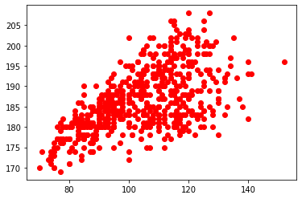

5.3 Utilisation du module Pandas⚓︎
1. Introduction et première dataframe⚓︎
Le module csv utilisé précédemment se contente de lire les données structurées. Il ne fait aucun effort particulier pour analyser les données. Nous nous en sommes aperçus lorsqu'il a fallu convertir par int() toutes les valeurs numériques, qui étaient interprétées comme des chaînes de caractères.
La bibliothèque pandas est par contre spécialement conçue pour l'analyse des données (data analysis) : elle est donc naturellement bien plus performante.
Importation du module pandas 
L'import se fait classiquement par :
import pandas as pd
Le type de variable dans lequel pandas va stocker les données s'appelle une dataframe, qui sera souvent abrégée par df.
Nous allons retravailler avec le fichier top14.csv.
Première dataframe
Nos données seront ensuite importées dans la dataframe df par l'instruction :
df = pd.read_csv('top14.csv', encoding = 'utf-8')
>>> type(df)
<class 'pandas.core.frame.DataFrame'>
2. Observation des données⚓︎
Que contient la variable df ?
>>> df
Equipe Nom Poste Date de naissance Taille Poids
0 Agen Anton PEIKRISHVILI Pilier 18/09/1987 183 122
1 Agen Dave RYAN Pilier 21/04/1986 183 116
2 Agen Giorgi TETRASHVILI Pilier 31/08/1993 177 112
3 Agen Kamaliele TUFELE Pilier 11/10/1995 182 123
4 Agen Malino VANAÏ Pilier 04/05/1993 183 119
.. ... ... ... ... ... ...
590 Toulouse Werner KOK Ailier 27/01/1993 177 78
591 Toulouse Yoann HUGET Ailier 02/06/1987 190 97
592 Toulouse Matthis LEBEL Arrière 25/03/1999 185 91
593 Toulouse Maxime MÉDARD Arrière 16/11/1986 180 85
594 Toulouse Thomas RAMOS Arrière 23/07/1995 178 86
[595 rows x 6 columns]
Les données sont présentées dans l'ordre originel du fichier.
2.1 Structure globale des données⚓︎
La structure des données : info
>>> df.info()
<class 'pandas.core.frame.DataFrame'>
RangeIndex: 595 entries, 0 to 594
Data columns (total 6 columns):
# Column Non-Null Count Dtype
--- ------ -------------- -----
0 Equipe 595 non-null object
1 Nom 595 non-null object
2 Poste 595 non-null object
3 Date de naissance 595 non-null object
4 Taille 595 non-null int64
5 Poids 595 non-null int64
dtypes: int64(2), object(4)
memory usage: 28.0+ KB
On peut y constater une très bonne nouvelle : les données numériques sont reconnues comme telles (type int64 ).
2.2 Accès à une fiche particulière⚓︎
D'après la commande précédente, il y a 595 entrées dans notre fichier de données. L'accès à une fiche particulière se fera avec la commande loc.
Accès à une fiche : loc
>>> df.loc[312]
Equipe Lyon
Nom Charlie NGATAI
Poste Centre
Date de naissance 17/08/1990
Taille 188
Poids 103
Name: 312, dtype: object
2.3 Premières et dernières lignes⚓︎
Il est toutefois possible d'avoir uniquement les premières lignes du fichier avec la commande head() et les dernières du fichier avec la commande tail(). Ces commandes peuvent recevoir en paramètre un nombre entier :
Les premières lignes du fichier : head
>>> df.head()
Equipe Nom Poste Date de naissance Taille Poids
0 Agen Anton PEIKRISHVILI Pilier 18/09/1987 183 122
1 Agen Dave RYAN Pilier 21/04/1986 183 116
2 Agen Giorgi TETRASHVILI Pilier 31/08/1993 177 112
3 Agen Kamaliele TUFELE Pilier 11/10/1995 182 123
4 Agen Malino VANAÏ Pilier 04/05/1993 183 119
>>> df.head(2)
Equipe Nom Poste Date de naissance Taille Poids
0 Agen Anton PEIKRISHVILI Pilier 18/09/1987 183 122
1 Agen Dave RYAN Pilier 21/04/1986 183 116
Les dernières lignes du fichier : tail
>>> df.tail()
Equipe Nom Poste Date de naissance Taille Poids
590 Toulouse Werner KOK Ailier 27/01/1993 177 78
591 Toulouse Yoann HUGET Ailier 02/06/1987 190 97
592 Toulouse Matthis LEBEL Arrière 25/03/1999 185 91
593 Toulouse Maxime MÉDARD Arrière 16/11/1986 180 85
594 Toulouse Thomas RAMOS Arrière 23/07/1995 178 86
>>> df.tail(3)
Equipe Nom Poste Date de naissance Taille Poids
592 Toulouse Matthis LEBEL Arrière 25/03/1999 185 91
593 Toulouse Maxime MÉDARD Arrière 16/11/1986 180 85
594 Toulouse Thomas RAMOS Arrière 23/07/1995 178 86
3. Analyse automatique et filtrage⚓︎
3.1 Extraction d'une colonne⚓︎
L'idée générale est que l'on va créer de nouveaux objets contenant uniquement les renseignements qui nous intéressent.
Extraction d'une colonne : df[colonne]
Pour créer une liste contenant uniquement les données numériques de la colonne poids, il suffit d'écrire :
poids = df['Poids']
La variable poids est un objet de type Series (assimilable à une liste) qui va pouvoir être exploitée très facilement.
On peut d'ailleurs accéder à un élément particulier de cette variable :
>>> poids[15]
114
On confirme donc une excellente nouvelle : les poids sont bien considérés nativement comme des nombres. On peut donc se servir de manière très intuitive de cette fonctionnalité pour faire des graphiques très facilement, sans conversion comme dans le module csv !
Pour trouver le poids minimal de cette série, on utilisera naturellement la fonction min :
>>> min(poids)
70
Pour tracer notre nuage de points poids-taille, le code sera donc simplement :
import matplotlib.pyplot as plt
X = df['Poids']
Y = df['Taille']
plt.plot(X, Y, 'ro')
plt.show()

3.2 Tri et Analyse automatique des données⚓︎
L'interprétation numérique permet à pandas d'analyser automatiquement les données, avec notamment la fonction describe().
Résumé des données numériques : describe
>>> df['Taille'].describe()
count 595.000000
mean 186.559664
std 7.572615
min 169.000000
25% 181.000000
50% 186.000000
75% 192.000000
max 208.000000
Name: Taille, dtype: float64
On voit donc que les principaux indicateurs statistiques sont proposés.
D'ailleurs, on peut très facilement tracer des boites à moustaches avec la fonction boxplot().
graph_taille = df.boxplot("Taille")
graph_taille.plot()
plt.show()

Pour les données non-numériques, la commande describe() n'est que peu d'utilité. Elle renseigne toutefois la valeur la plus fréquente (en statistiques, le mode ou valeur modale) grâce à describe().top.
Valeur modale de données non-numériques : describe().top
>>> df['Poste'].describe().top
'3ème ligne'

Pour avoir un détail plus précis de la répartition des données, on peut utiliser value_counts :
Répartition des valeurs : value_counts
>>> df['Poste'].value_counts()
3ème ligne 111
Pilier 110
2ème ligne 74
Centre 71
Ailier 64
Talonneur 50
Mêlée 42
Ouverture 38
Arrière 35
Name: Poste, dtype: int64
Il est possible aussi de trier la dataframe en lui indiquant la colonne de tri :
Trier les données : sort_values
>>> classement_par_taille = df.sort_values(by='Taille', ascending = True)
4. Filtres et recherches⚓︎
Le principe du filtrage va être de créer une nouvelle dataframe ne contenant que des lignes correspondant à un certain critère.
Filtrage des lignes : df[booléen]
Comment créer une dataframe ne contenant que les joueurs de l'UBB ?
L'idée syntaxique est d'écrire à l'intérieur de df[] le test qui permettra le filtrage.
>>> UBB = df[df['Equipe'] == 'Bordeaux']
df['Equipe'] == 'Bordeaux' doit se comprendre ainsi : on ne veut garder que les joueurs dont le champ Equipe est égal à 'Bordeaux'.
>>> UBB
Equipe Nom Poste Date de naissance Taille Poids
80 Bordeaux Jefferson POIROT Pilier 01/11/1992 181 117
81 Bordeaux Lasha TABIDZE Pilier 04/07/1997 185 117
82 Bordeaux Laurent DELBOULBÈS Pilier 17/11/1986 181 106
83 Bordeaux Lekso KAULASHVILI Pilier 27/08/1992 187 120
84 Bordeaux Peni RAVAI Pilier 16/06/1990 185 119
...
Exercice 1
Créer une dataframe grands qui contient tous les joueurs mesurant plus de 2 mètres (inclus).
Pour effectuer des opérations sur les booléens, on utilisera le symbole & pour le ET et | pour le OU.
Exercice 2
Créer une dataframe grands_et_gros qui contient tous les joueurs mesurant plus de 2 mètres (inclus) et pesant plus de 120 kg (inclus).
Exercice 3
Trouver en une seule ligne le joueur le plus léger du Top14.
Exercice 4
Tracer le nuage de point poids-taille comme précédemment, mais en marquant d'un point bleu les 2èmes ligne et d'un point rouge les piliers.
5. Modification de la structure : rajout d'une colonne⚓︎
Afin de pouvoir trier les joueurs suivant de nouveaux critères, nous allons rajouter un champ pour chaque joueur.
Prenons un exemple stupide : fabriquons un nouveau champ 'Poids après les vacances' qui contiendra le poids des joueurs augmenté de 8 kg.
Ceci se fera simplement par :
Rajout d'une colonne
>>> df['Poids après les vacances'] = df['Poids'] + 8
On voit apparaitre dans la dataframe df une nouvelle colonne
>>> df.head()
Equipe Nom Poste ... Taille Poids Poids après les vacances
0 Agen Anton PEIKRISHVILI Pilier ... 183 122 130
1 Agen Dave RYAN Pilier ... 183 116 124
2 Agen Giorgi TETRASHVILI Pilier ... 177 112 120
3 Agen Kamaliele TUFELE Pilier ... 182 123 131
4 Agen Malino VANAÏ Pilier ... 183 119 127
[5 rows x 7 columns]
Pour supprimer cette colonne sans intérêt, il suffit de faire :
del df['Poids après les vacances']
Exercice 5
Q1. Créer une colonne contenant l'IMC de chaque joueur.
Q2. Créer une nouvelle dataframe contenant tous les joueurs du Top14 classés par ordre d'IMC croissant.
6. Retour sur le KNN⚓︎
Comme dans ce cours, nous allons construire une fonction conseil_poste recevant en paramètres :
df: la dataframe contenant nos donnéespoids: le poids du joueur Xtaille: la taille du joueur Xk: le nombre de joueurs les plus proches sur lequel on se base pour faire la prédiction
qui renvoie le poste le plus compatible avec la morphologie de X.
Il est maintenant possible de coder cette fonction beaucoup plus simplement (mais alors VRAIMENT beaucoup) qu'avec le module csv.
Il va nous suffir de :
- créer une nouvelle colonne contenant la distance de chaque joueur avec le joueur X.
- classer la dataframe suivant cette nouvelle colonne.
- ne garder que les
kpremiers éléments. - renvoyer le poste le plus fréquent parmi ces
kpremiers élements.
Algorithme KNN
1 2 3 4 5 6 7 8 9 | |
>>> conseil_poste(df, 70, 160, 10)
'Mêlée'
>>> conseil_poste(df, 130, 160, 10)
'Pilier'